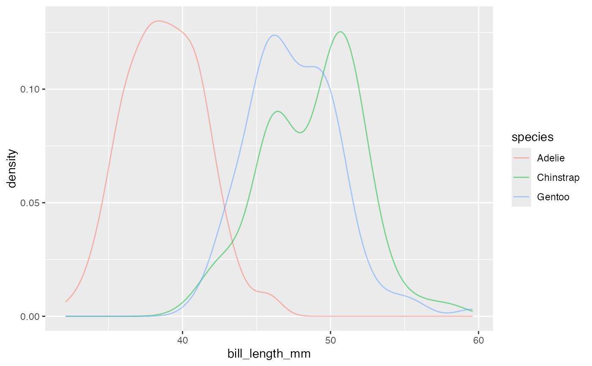
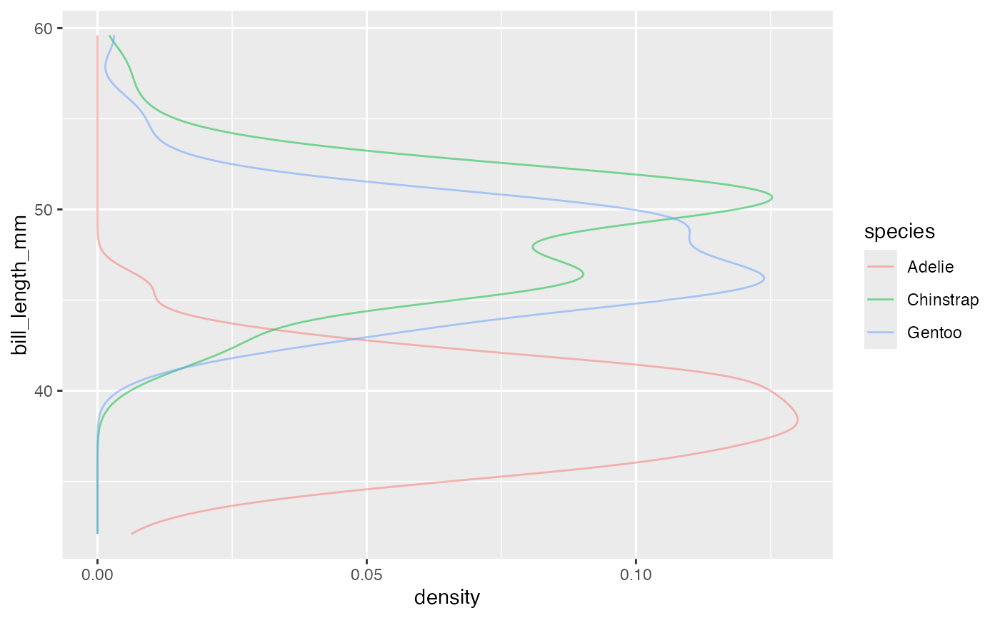

Computes and draws a kernel density estimate, which is a smoothed version of the
histogram and is a useful alternative when the data come from an underlying smooth
distribution.
The only difference between gf_dens() and gf_density() is the default geom
used to show the density curve: gf_density() uses an area geom (which can be filled).
gf_dens() using a line geom (which cannot be filled).
gf_density( object = NULL, gformula = NULL, data = NULL, ..., alpha = 0.5, color, fill, group, linetype, size, kernel = "gaussian", n = 512, trim = FALSE, xlab, ylab, title, subtitle, caption, geom = "area", stat = "density", position = "identity", show.legend = NA, show.help = NULL, inherit = TRUE, environment = parent.frame() ) gf_dens( object = NULL, gformula = NULL, data = NULL, ..., alpha = 0.5, color, fill = NA, group, linetype, size, kernel = "gaussian", n = 512, trim = FALSE, xlab, ylab, title, subtitle, caption, geom = "line", stat = "density", position = "identity", show.legend = NA, show.help = NULL, inherit = TRUE, environment = parent.frame() ) gf_dens2( object = NULL, gformula = NULL, data = NULL, ..., alpha = 0.5, color, fill = NA, group, linetype, size, kernel = "gaussian", n = 512, trim = FALSE, xlab, ylab, title, subtitle, caption, geom = "density_line", stat = "density", position = "identity", show.legend = NA, show.help = NULL, inherit = TRUE, environment = parent.frame() )
Arguments
| object | When chaining, this holds an object produced in the earlier portions of the chain. Most users can safely ignore this argument. See details and examples. |
|---|---|
| gformula | A formula with shape |
| data | The data to be displayed in this layer. There are three options: If A A |
| ... | Additional arguments. Typically these are
(a) ggplot2 aesthetics to be set with |
| alpha | Opacity (0 = invisible, 1 = opaque). |
| color | A color or a formula used for mapping color. |
| fill | A color for filling, or a formula used for mapping fill. |
| group | Used for grouping. |
| linetype | A linetype (numeric or "dashed", "dotted", etc.) or a formula used for mapping linetype. |
| size | A numeric size or a formula used for mapping size. |
| kernel | Kernel. See list of available kernels in |
| n | number of equally spaced points at which the density is to be
estimated, should be a power of two, see |
| trim | If |
| xlab | Label for x-axis. See also |
| ylab | Label for y-axis. See also |
| title | Title, sub-title, and caption for the plot.
See also |
| subtitle | Title, sub-title, and caption for the plot.
See also |
| caption | Title, sub-title, and caption for the plot.
See also |
| geom | Use to override the default connection between
|
| stat | Use to override the default connection between
|
| position | Position adjustment, either as a string, or the result of a call to a position adjustment function. |
| show.legend | logical. Should this layer be included in the legends?
|
| show.help | If |
| inherit | A logical indicating whether default attributes are inherited. |
| environment | An environment in which to look for variables not found in |
Value
a gg object
Specifying plot attributes
Positional attributes (a.k.a, aesthetics) are specified using the formula in gformula.
Setting and mapping of additional attributes can be done through the
use of additional arguments.
Attributes can be set can be set using arguments of the form attribute = value or
mapped using arguments of the form attribute = ~ expression.
In formulas of the form A | B, B will be used to form facets using
facet_wrap() or facet_grid().
This provides an alternative to
gf_facet_wrap() and
gf_facet_grid() that is terser and may feel more familiar to users
of lattice.
Evaluation
Evaluation of the ggplot2 code occurs in the environment of gformula.
This will typically do the right thing when formulas are created on the fly, but might not
be the right thing if formulas created in one environment are used to create plots
in another.
See also
Examples
gf_dens()#> #> #> #> #> #> #> #> #>data(penguins, package = "palmerpenguins") gf_density(~bill_length_mm, fill = ~species, data = penguins)#> Warning: Removed 2 rows containing non-finite values (stat_density).gf_dens(~bill_length_mm, color = ~species, data = penguins)#> Warning: Removed 2 rows containing non-finite values (stat_density).gf_dens2(~bill_length_mm, color = ~species, fill = ~species, data = penguins)#> Warning: Removed 2 rows containing non-finite values (stat_density).#> Warning: Removed 2 rows containing non-finite values (stat_bin).# Chaining in the data data(penguins, package = "palmerpenguins") penguins %>% gf_dens(~bill_length_mm, color = ~species)#> Warning: Removed 2 rows containing non-finite values (stat_density).# horizontal orientation penguins %>% gf_dens(bill_length_mm ~ ., color = ~species)#> Warning: Removed 2 rows containing non-finite values (stat_density).